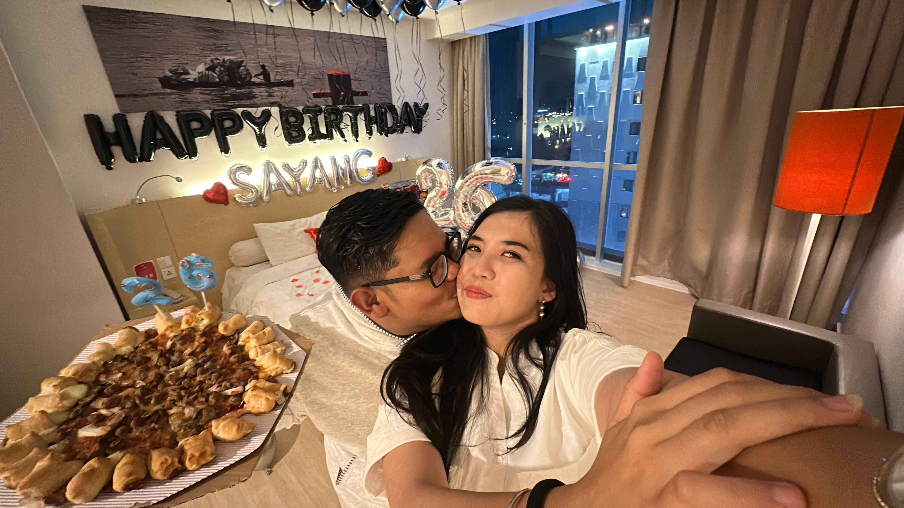
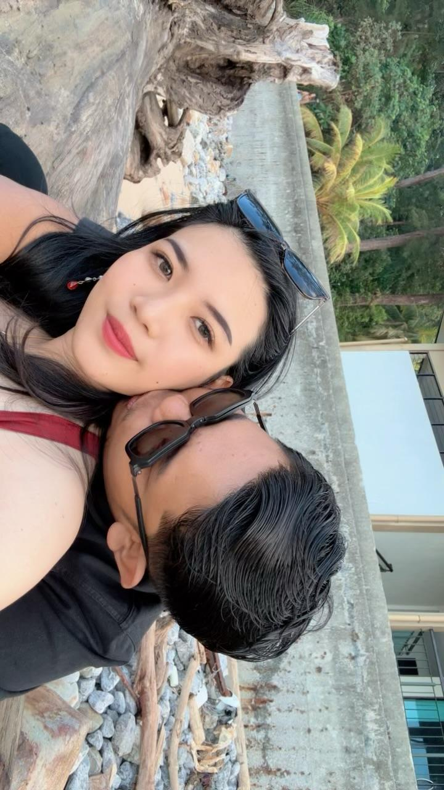
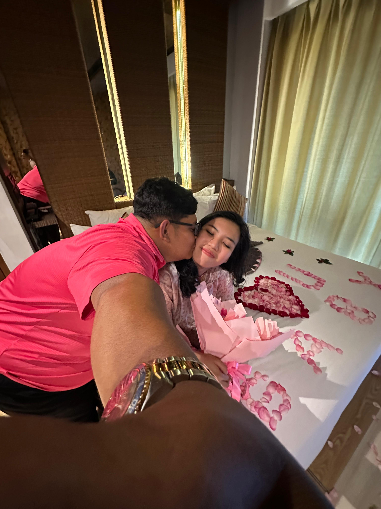
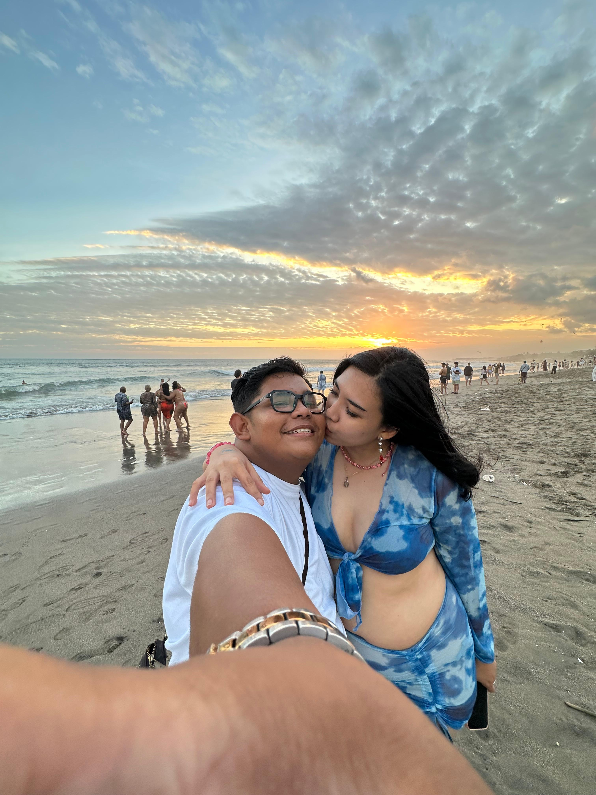
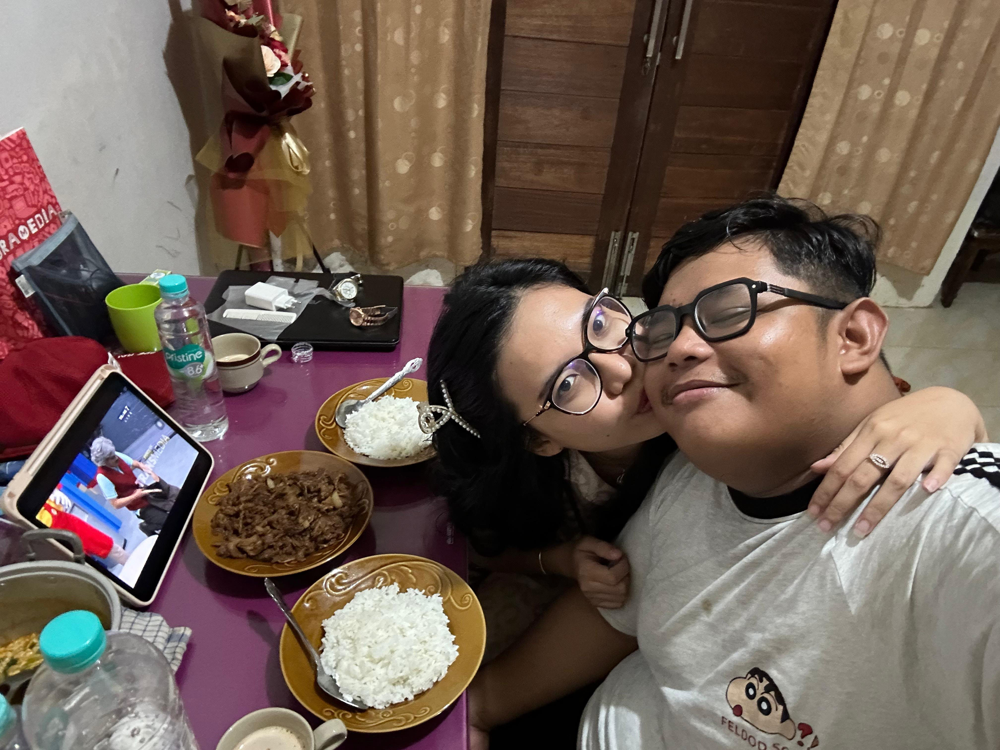
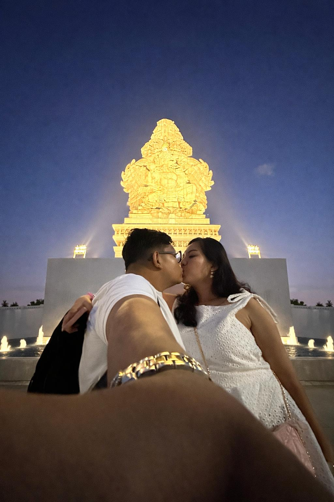
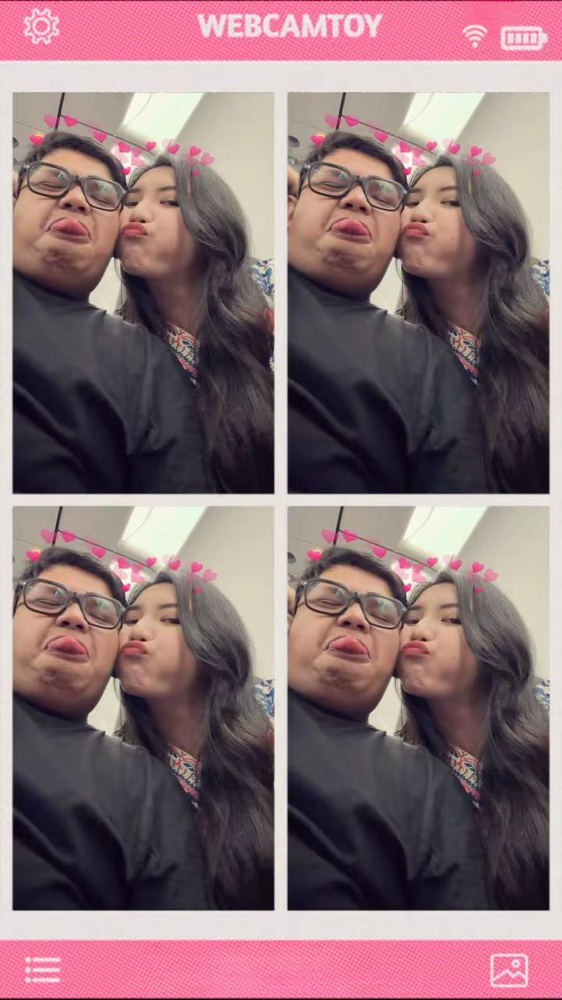
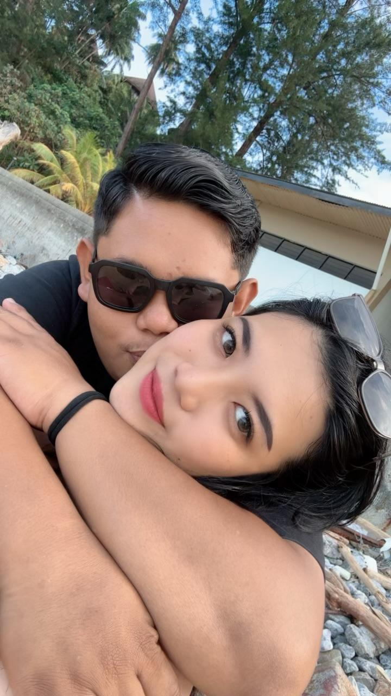

RIZKA AULIA ZAZKIA
"Selamat datang bulan kelahiran kamu sayangku. Sudah sejak lama aku menanti ketukan waktu ini tiba. Tidak ada kemilau, hingar bingar, hanya ada ketulusan rasa yang kurajut erat dengan segenap hatiku. Menyayangimu adalah ketetapan terbaik, dan memilikimu adalah hal paling membanggakan yang pernah singgah di dalam takdirku."
🔑 Input Kode Rahasia Harian
Masukkan password hadiah fisik hari ini untuk menambah lembar memori baru:
Aku selalu percaya kalau semesta itu adil, dan kehadiran kamu di dunia ini adalah pembuktiannya. Kehadiran kamu di hidup aku adalah hadiah paling indah yang pernah aku terima. Kamu itu senyuman di hari-hari aku, pelukan hangat di setiap malamku, dan satu-satunya alasan kenapa duniaku terasa jauh lebih berwarna, tenang, dan penuh kebahagiaan. Di mata aku, kamu selalu jadi hal paling mengagumkan yang gak akan pernah bosan untuk aku syukuri setiap harinya.
Tapi buat aku, satu hari jelas gak akan pernah cukup untuk merayakan berartinya kamu di hidup aku. Aku mau mendedikasikan seluruh waktu aku dari tanggal 1 sampai 17 Agustus penuh hanya untuk memanjakan kamu dan membuat kamu merasa jadi wanita paling dicintai di dunia ini tanpa ada yang terlewat sedikit pun. Website ini adalah persembahan kecil dari hati aku yang penuh dengan rencana indah buat kamu. Terima kasih ya, sayang, karena sudah lahir ke dunia ini, sudah melangkah bersamaku, dan selalu menjadi bagian paling manis di setiap detak jantungku. I love you so much, Rizka Aulia Zazkia."
📝 Lembar Balasan di Hari Pertamamu (Day 1)
Gimana, hadiah pertama malam ini dan video di atas sukses bikin kamu tersenyum belum? Hahaha. Tulis apa aja yang lagi kamu rasain sekarang di bawah ya, sayang:

Setiap hari aku selalu merenung dan sadar, kalau hal paling indah yang pernah terjadi di dalam hidup aku adalah momen di mana aku diizinkan untuk memiliki kamu. Di dunia yang kadang terasa rumit dan melelahkan ini, kehadiran kamu adalah satu-satunya fase yang selalu berhasil membuat duniaku terasa jauh lebih tenang, damai, dan penuh warna. Menyayangi kamu itu seperti bernapas; hal paling alami yang dilakukan jantungku tanpa perlu pernah diajari.
Aku benar-benar bersyukur kepada semesta karena telah mengirimkan manusia seindah dan setulus kamu untuk berjalan di sisiku. Kamu bukan cuma pelengkap, tapi kamu adalah pusat dari setiap senyuman, tawa, dan rasa bahagia yang aku punya saat ini. Aku mau kamu selalu ingat, dari tanggal 1 sampai 17 Agustus nanti—bahkan hingga ratusan bulan setelah ini—kamu akan selalu jadi prioritas utamaku, ruang paling nyaman di hidupku, dan manusia paling berharga yang akan selalu aku jaga dengan seluruh cintaku. Website ini akan terus berjalan menemanimu sampai hari lahirmu tiba, jadi bersiaplah untuk terus menjadi wanita yang paling dicintai di dunia ini setiap harinya. I love you more than words can say, Rizka Aulia ZAZKIA." "
📝 Lembar Balasan Jurnal (Day 2)

Aku sengaja memberikan kalender kustom itu hari ini karena aku ingin kamu melihat bagaimana angka 1 sampai 17 Agustus berubah menjadi hari-hari yang paling istimewa. Bagiku, waktu gak lagi dihitung dengan detik atau jam, tapi dihitung dari setiap momen berharga yang aku lewati bersama kamu. Kamu tahu gak? Kamu itu seperti zat utama yang selalu mengalirkan energi positif, kebahagiaan, dan alasan di setiap detak jantungku untuk selalu bersemangat menjalani hari.
Setiap kali aku melihat kalender itu, yang aku lihat bukan cuma deretan tanggal merah atau hari libur, tapi aku melihat rangkaian kejutan yang sudah aku siapkan dengan penuh rasa cinta cuma buat kamu. Aku mau mendedikasikan bulan ini sepenuhnya untuk membuat kamu merasa menjadi wanita yang paling disayangi dan dirayakan di dunia ini. Jurnal ini masih sangat panjang, jadi tetap simpan senyuman manismu itu untuk hari-hari ke depan ya, sayang. I love you to the moon and back, Rizka Aulia ZAZKIA."
📝 Lembar Balasan Jurnal (Day 3)

Namun, di situlah letak keajaiban dan ketulusan hatimu yang selalu membuatku bertekuk lutut tak berdaya. Alih-alih menghukumku dengan kemarahan yang membakar atau rasa sakit yang setimpal, kamu selalu memilih untuk menyambutku kembali dengan pelukan hangat dan pengampunan yang begitu luas. Kamu tidak pernah membalas egoku dengan rasa sakit yang lebih besar; justru dari semua kesalahan yang kuperbuat, rasa bersalah di dalam dadaku sendirilah yang menghukumku karena telah menyia-nyiakan ketulusanmu. Terima kasih ya, Sayang, karena selalu menjadi rumah yang paling pemaaf, menuntun langkahku yang sering tersesat, dan mencintaiku tanpa syarat walau aku sering kali menyakitimu—aku berjanji akan terus belajar menjadi pria yang lebih baik dan layak untuk bersanding di sisimu selamanya."
Gimana Day 4 Ini...??? Are U Happy... Ayang kasihan sakit punggung karena kasurnya keras... jadi aku belikan saja yaaa... buat ditambal atasnya... jadi ayang nyaman... semoga suka sama hadiahnya... Love You Sayangggg Akuuu...
📝 Lembar Balasan Jurnal (Day 4)
Maaf telah salah cara aku mencintai kamu... semata karena aku ingin membahagiakan kamu... Faktanya aku malah membahayakan kita... membahayakan mimpi yang sudah kita ucap sama - sama... Aku jujur saja... Takut sekali malam itu... tapi aku sadar... aku bukan pengecut... sudah sejauh ini... aku rusak mimpi - mimpi kita... sekarang izinin aku susun ulang semuanya...
Kita rancang semuanya... kita buat pola baru... pasti akan ada perdebatan baru... tapi aku yakin... itu bukan hal sulit... karena nyatanya... tiap kita evaluasi semuanya... kita tidak saling jatuhkan... kita bangkitkan kembali... kita kuatkan... memang saat seperti malam itulah... saat evaluasi semua terucap... semua obrolan dan perkataan pasti terucap jelas dan lantang... tapi dengan cara itu... Kita Evaluasi Semuanya... beribu salah kita maafkan... berjuta masalah kita selesaikan... Satukan lagi yaaa... Aku kena hati banget malam itu... sadar bangettt... sadar pola ini salah... aku rusak perlahan kepercayaan kamu... tapi terlanjur basah... aku selami sedikit lagi yaaa...
Ini ada hadiah Arloji untuk kamu... walau bukan warna yang kamu mau... tapi aku coba cari yang paling mendekati... dan teringat kamu kasih opsi warna tersebut... Diterima ya sayang aku... setelah itu... nasihati aku lagi ya sayang... aku cuman mau selesaikan misi aku saja...
R = Relaxation and Spa, I = In The Dark You Bright, Z = Zat Pelebur, K = Kasur Nyaman (Walau Salah Merk), A = Arloji. RIZKA... aku coba susun sebisa aku... jadi tolong diterima saja ya sayang....
Love You MY Future Wife... My Girl... My Wine... My Mine... My Everythink... Selamat Datang Dibulan Lahir Kamu... Bulan dimana lahir seorang wanita tangguh bernama RIZKA AULIA ZAZKIA... sejak 24 tahun yang lalu... dia wanita yang mandiri... dia wanita yang tangguh... dia WANITAKU... teruslah bersinar sayanggg... kejar semua harapan kamu... aku disini hadir... untuk wujudkan semua itu... aku berharap pada Tuhan... Jadikan dia wanita yang paling bahagia dari tanganku ya Tuhan... Aamiin..."
📝 Lembar Balasan di Hari Pertamamu (Day 5)
JELASKANLAH ISI HATIMU SAYANG... AKU TERIMA BAIK DAN BURUKNYA... BIARKAN KAMU TUMPAHKAN SELURUHNYA... AKU KASIH RUANG JUJUR UNTUK KAMU...:

Aku sengaja pilih ini, karena aku mau baju tidur ini yang meluk kamu setiap malam... menggantikan aku yang belum bisa selalu ada di samping kamu buat jagain kamu... Aku mau kamu bisa istirahat dengan nyaman, tidur nyenyak tanpa beban pikiran, dan bangun dengan senyuman besok pagi... Karena perjalanan kita di depan masih panjang banget sayang, aku mau kamu selalu punya energi buat jalan bareng aku.
Sayang... aku tahu kamu itu wanita yang mandiri banget, wanita tangguh yang terbiasa apa-apa bisa sendiri. Aku kagum banget sama hal itu dari kamu. Tapi sayang, tolong jangan pernah merasa kamu harus selalu sendirian ya... Aku ada di sini, selalu ada di tiap saat kamu butuh. Kenapa harus dihadapi sendiri kalau sekarang udah ada aku? Jadi, kalau bisa, mulai sekarang libatkan aku ya sayang dalam hal apa pun itu... Berbagi capeknya sama aku, berbagi ceritanya sama aku. Aku mau jadi tempat bersandar kamu.
Lewat kado hari ini juga, aku mau jujur dari lubuk hati aku yang paling dalam... Kalau kamu bilang aku harus berubah... demi Tuhan, aku siap sayang... Aku siap berubah demi kebahagiaan kita bersama... Aku sadar kemarin aku banyak egoisnya, banyak salahnya, tapi tolong jangan ragukan kalau aku sayangggg banget sama kamu... Rasa sayang aku ke kamu itu yang jadi alasan aku buat terus belajar jadi laki-laki yang lebih baik lagi... Aku ga mau kehilangan kamu, aku ga mau mimpi kita hancur cuma karena kebodohan aku... Misi aku buat bahagiain kamu masih panjang, dan aku gak akan berhenti di sini.
Mulai hari ini, detik ini, yuk kita buka lembaran baru... Tuntun aku ya sayang... kalau aku salah, tegur aku... kalau aku mulai melenceng, ingetin aku... Aku siap dengerin semua nasihat kamu karena aku tahu itu semua demi kebaikan kita, demi masa depan kita...
Terima ya sayang kado hari ini... Dipakai yaaa, pasti makin lucu kalau kamu yang pakai... Semoga suka, dan semoga bisa nemenin tidur nyenyak kamu malam ini...
I Love you so much, my future wife... Bobo yang nyenyak ya wanitaku, kekasihku, duniaku... Aamiin..."
📝 Lembar Balasan Jurnal (Day 6)

Kemarin kita udah sama-sama ngelewatin rangkaian nama depan kamu, RIZKA. Mulai dari Day 1 (Relaxation and Spa) buat manjain kamu, Day 2 (In The Dark You Bright) yang ngingetin aku kalau kamu selalu jadi cahaya di hidup aku, Day 3 (Zat Pelebur) ego kita, Day 4 (Kasur Nyaman) tempat kamu istirahat walau aku salah merk, Day 5 (Arloji) pengingat waktu baru kita, sampai kemarin Day 6 (Apparel for Sleep) baju tidur lucu yang nemenin malam kamu. Aku bahagia banget bisa nyelesaiin rangkaian itu buat kamu, sayang...
Nah, untuk hari ini di Day 7, aku kasih kamu Umbrella, payung saku kecil yang simpel dan lucu ini buat kamu bawa-bawa di dalam tas kamu. Aku beliin ini karena belakangan ini cuaca lagi gak menentu banget, kadang panas banget, kadang tiba-tiba hujan. Aku gak mau kamu kecapekan atau sampai jatuh sakit karena kehujanan atau kepanasan di jalan.
Sayang... payung ini aku kasih sebagai simbol kalau aku pengen selalu ada buat jagain dan melindungi kamu, meskipun sekarang jarak kita belum bisa bikin aku selalu ada di samping kamu setiap saat fisik kamu butuh. Aku tahu kamu itu wanita yang mandiri banget, wanita tangguh yang kalau ke mana-mana terbiasa sendiri dan bisa jaga diri sendiri. Tapi sayang, plis jangan merasa kamu harus selalu menghadapi semuanya sendirian ya...
Kalau cuaca di luar lagi buruk, atau kalau "badai" di hidup kamu lagi dateng, tolong libatkan aku ya sayang. Jangan dipendam sendiri, jangan dihadapi sendiri. Kenapa harus sendiri kalau sekarang udah ada aku di sini? Bagi capeknya sama aku, bagi bebannya sama aku. Aku mau jadi payung yang siap ngelindungin kamu kapan pun kamu butuh tempat bersandar.
Aku sayangggg banget sama kamu, sayang. Perjalanan misi aku buat bahagiain kamu masih panjang banget ke depan, dan aku gak akan pernah bosen. Kalau kamu billing aku harus berubah demi kebaikan kita, demi Tuhan aku siap sayang. Aku siap berubah dan terus belajar jadi laki-laki yang lebih baik dan lebih peka lagi buat masa depan kita berdua. Tuntun aku terus ya, my future wife...
Diterima ya sayang kado untuk hari ini... Jangan lupa selalu ditaruh di dalam tas kamu yaaa, biar kalau hujan kamu gak kebingungan lagi.
I love you so much, my girl... Jaga kesehatan kamu ya wanitaku, duniaku... Aamiin..."
📝 Lembar Balasan Jurnal (Day 7)
Tidak Ada Kata Kata Untuk Hari Ini... Aku Bebaskan Ekspresikan Diri Kamu..🥰
1. Apapun Yang Kamu Ingin, Aku Lakukan!
2. Apapun Yang Ingin Kamu Lakukan, Aku Laksanakan!
Aku Tidak Akan Lawan,Tidak Akan Bantah, Tidak Akan Bilang Tidak. Hari Ini Aku Milik Kamu Penuh, Utuh dan Penurut.🥰🥰🥰"
📝 Lembar Balasan Jurnal (Day 8)

Dunia ini sering kali berjalan terlalu cepat dan terasa melelahkan, tetapi kehadiranmu selalu menjadi satu-satunya tempat di mana aku bisa menemukan ketenangan. Kamu adalah alasan mengapa aku tetap berdiri tegak di tengah semua ketidakpastian yang ada di luar sana. Bersamamu, aku tidak hanya merasa dicintai, tetapi juga merasa memiliki kekuatan penuh untuk menghadapi apa pun yang menghadang di depan kita.
Aku mengagumi cara kita memandang dunia ini bersama-sama—memahami bahwa hidup tidak selalu ramah, namun memilih untuk tetap berjalan beriringan. Saat kamu merasa lelah atau ingin menyerah, ingatlah bahwa genggaman tanganku tidak akan pernah lepas untuk menguatkanmu. Kita tidak perlu menaklukkan seluruh isi bumi, cukup pastikan bahwa dalam setiap langkah kecil yang kita ambil, kita selalu saling memiliki satu sama lain.
Terima kasih telah menjadi bagian paling indah sekaligus paling nyata dalam hidupku, Sayang. Mari kita terus melangkah tanpa perlu takut pada apa pun yang ada di depan, karena selama kita bersama, dunia ini akan selalu terasa cukup untuk kita berdua. Kamu adalah rumah, tujuan, dan masa depan yang selalu ingin aku perjuangkan setiap hari."
📝 Lembar Balasan Jurnal (Day 9)

Logikaku runtuh setiap kali berada di dekatmu, dan dengan senang hati aku menyerah pada perasaan ini. Bagiku, tidak ada kamus menyerah untuk membuatmu tersenyum. Aku akan mempelajari setiap detail kecil tentang apa yang membuat matamu berbinar, menghafal jenis tawa yang paling tulus darimu, dan menyimpan sejuta cara di kepalaku hanya untuk memastikan bahwa sedihmu tidak akan pernah bertahan lama.
Aku ada di sini, tumbuh menjadi versi terbaik dari diriku, itu semua karena kamu ada sebagai kompasnya. Jika membahagiakanmu adalah sebuah seni, maka aku ingin menjadi seniman paling tekun sepanjang hidupku. Karena di setiap embusan napasmu, di situlah seluruh hidupku berlabuh."
📝 Lembar Balasan Jurnal (Day 10)

Melihat caramu berpikir, tersenyum, dan menghadapi hari membuatku sadar bahwa keindahan sejati terletak pada ketenangan yang kamu bawa. Jurnal ini adalah caraku mengatakan bahwa setiap pencapaianmu layak dirayakan, dan setiap sedihmu layak diringankan. Aku berkomitmen untuk terus menjadi pembaca setiamu, mendukung setiap ambisimu, dan memastikan bahwa bab-bab selanjutnya dalam hidupmu akan selalu dipenuhi dengan rasa aman dan bahagia."
📝 Lembar Balasan Jurnal (Day 12)

Aku sengaja menyiapkan satu background dengan dua warna origami di dalam ziplock ini. Aku tahu kamu itu wanita yang mandiri banget, wanita tangguh yang terbiasa apa-apa bisa sendiri. Aku kagum banget sama hal itu dari kamu. Tapi sayang, tolong jangan pernah merasa kamu harus selalu sendirian ya...
Ziplock ini adalah cara aku biar bisa selalu meluk kamu setiap malam dan nemenin pikiran kamu, sekaligus menggantikan aku yang belum bisa selalu ada di samping kamu buat jagain kamu setiap saat. Mulai sekarang, kalau kamu lagi melihat aku menyebalkan, ambillah kertas origami merah, tulis kekesalanku di dalamnya, lalu masukkan ke ziplock itu. Sebaliknya, kalau kamu lagi merasa aku menyenangkan, tuliskan di origami biru.
Kenapa harus dipendam sendiri kalau sekarang udah ada aku? Aku mau kamu bisa istirahat dengan nyaman, tidur nyenyak tanpa beban pikiran, dan bangun dengan senyuman besok pagi. Jadi, kalau bisa, mulai sekarang libatkan aku ya sayang dalam hal apa pun itu... Berbagi capeknya sama aku, berbagi ceritanya sama aku. Aku mau jadi tempat bersandar kamu karena perjalanan kita di depan masih panjang banget sayang, aku mau kamu selalu punya energi buat jalan bareng aku.
Lewat kado hari ini juga, aku mau jujur dari lubuk hati aku yang paling dalam... Kalau kamu bilang aku harus berubah... demi Tuhan, aku siap sayang... Aku siap berubah demi kebahagiaan kita bersama... Aku sadar kemarin aku banyak egoisnya, banyak salahnya, tapi tolong jangan ragukan kalau aku sayangggg banget sama kamu... Rasa sayang aku ke kamu itu yang jadi alasan aku buat terus belajar jadi laki-laki yang lebih baik lagi... Aku ga mau kehilangan kamu, aku ga mau mimpi kita hancur cuma karena kebodohan aku... Misi aku buat bahagiain kamu masih panjang, dan aku gak akan berhenti di sini.
Mulai hari ini, detik ini, yuk kita buka lembaran baru... Melalui kertas-kertas di ziplock itu nanti, tuntun aku ya sayang... kalau aku salah dan menyebalkan, tegur aku lewat origami merahmu... kalau aku sudah benar, ingetin aku lewat origami birumu... Aku siap dengerin semua nasihat kamu karena aku tahu itu semua demi kebaikan kita, demi masa depan kita...
Terima ya sayang kado hari ini... Disimpan dan diisi yaaa, semoga ziplock ini bisa jadi jembatan biar kita makin saling paham... Semoga suka, dan semoga bisa nemenin tidur nyenyak kamu malam ini...
I Love you so much, my future wife... Bobo yang nyenyak ya wanitaku, kekasihku, duniaku... Aamiin...
Sewaktu - waktu... kita buka ya sayang... isi ziplock ini... jangan ada yang di buang yaaaa... biarkan aku belajar dari tiap kesalahan aku..."